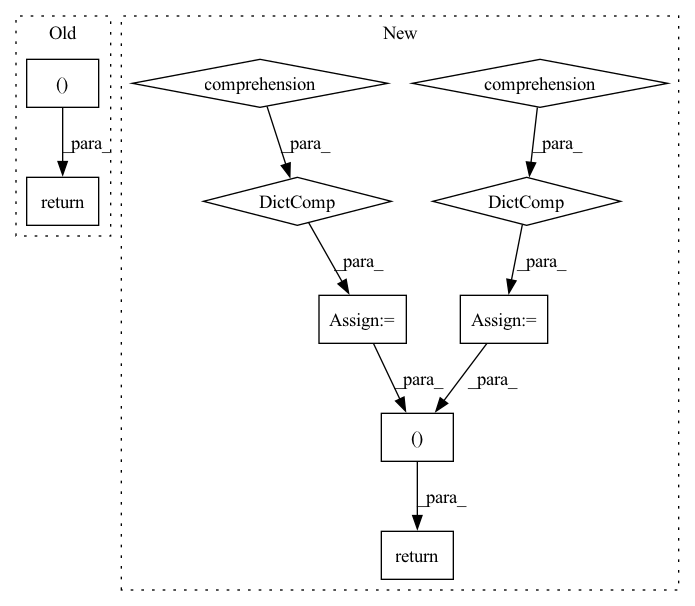

Pattern ID :15095
Before Change
def _compute_normalization(df: DataFrame, num_cols: List) -> Tuple:
return df[num_cols].mean().to_dict(), df[num_cols].std().to_dict()
def _normalize(df: DataFrame, num_cols: List, mean: Dict, std: Dict) -> DataFrame:
mean = Series(mean)After Change
def _compute_normalization(df: DataFrame, num_cols: List) -> Tuple:
df_mean = {c: np.nanmean(df[c], dtype=float) for c in num_cols}
df_std = {c: np.nanstd(df[c], dtype=float) for c in num_cols}
zero_std = [c for c in num_cols if df_std[c] == 0]
if zero_std:
logging.warning(
f"Following numerical columns {zero_std} have zero STD which may lead to NaN in normalized dataset."
)
return df_mean, df_std
def _normalize(df: DataFrame, num_cols: List, mean: Dict, std: Dict) -> DataFrame:
mean = Series(mean)In pattern: SUPERPATTERN
Frequency: 4
Non-data size: 10
Instances Fragment ID: 50999338
Project Name: pytorchlightning/lightning-flash
Commit Name: 9dc970c2dd401813f17f797d346a867a42806556
Time: 2022-07-26
Author: Borda@users.noreply.github.com
File Name: flash/tabular/classification/utils.py
M Class Name: AnonimousClass
N Class Name: AnonimousClass
M Method Name: _compute_normalization(2)
N Method Name: _compute_normalization(2)
M Parent Class:
N Parent Class:
M File Name: flash/tabular/classification/utils.py
N File Name: flash/tabular/classification/utils.py
M Start Line: 35
M End Line: 35
N Start Line: 36
N End Line: 43
Before Change
eval_summary = OrderedDict()
eval_summary[metric_string] = eval_result
return self.kg_embedding_model, eval_summary
def _train(self, learning_rate, num_epochs, batch_size, pos_tripels, neg_triples):
optimizer = optim.SGD(self.kg_embedding_model.parameters(), lr=learning_rate)
After Change
eval_summary[metric_string] = eval_result
id_to_entity = {value:key for key,value in entity_to_id.items()}
id_to_rel = {value:key for key,value in rel_to_id.items()}
entity_to_embedding = {id_to_entity[id]: embedding for id, embedding in
enumerate(self.kg_embedding_model.entities_embeddings.weight)}
relation_to_embedding = {id_to_rel[id]: embedding for id, embedding in
enumerate(self.kg_embedding_model.relation_embeddings.weight)}
return self.kg_embedding_model, eval_summary, entity_to_embedding, relation_to_embedding
def _train(self, learning_rate, num_epochs, batch_size, pos_tripels, neg_triples):
optimizer = optim.SGD(self.kg_embedding_model.parameters(), lr=learning_rate)
Fragment ID: 50999336
Project Name: pykeen/pykeen
Commit Name: 478da82c3d311d72f0db6c050b6ace92f85199d0
Time: 2018-06-16
Author: ali-mehdi@live.de
File Name: src/utilities/pipeline.py
M Class Name: Pipeline
N Class Name: Pipeline
M Method Name: start_pipeline(7)
N Method Name: start_pipeline(7)
M Parent Class: object
N Parent Class: object
M File Name: src/utilities/pipeline.py
N File Name: src/utilities/pipeline.py
M Start Line: 51
M End Line: 72
N Start Line: 51
N End Line: 78
Before Change
mAP = empty
cmAP = empty
return mAP, cmAP, classwise_AP, classwise_cAP
class CalibratedMeanAveragePrecisionMetric(MetricMixin):
Mean Average Precision (mAP) and Calibrated Mean Average Precision (mcAP)After Change
classwise_AP[i] = cls_AP
classwise_cAP[i] = cls_cAP
classwise_AP_dict = {int(k): v for k, v in zip(list(cids[sel]), classwise_AP)}
classwise_cAP_dict = {int(k): v for k, v in zip(list(cids[sel]), classwise_cAP)}
if empty_target_action == "skip":
classwise_AP = [c for c in classwise_AP if not math.isnan(c)]
classwise_cAP = [c for c in classwise_cAP if not math.isnan(c)]
if len(classwise_AP) > 0:
mAP = sum(classwise_AP) / len(classwise_AP)
mcAP = sum(classwise_cAP) / len(classwise_cAP)
else:
mAP = empty
mcAP = empty
return mAP, mcAP, classwise_AP_dict, classwise_cAP_dict
def _formatted_mean_calibrated_average_precision(
preds: Tensor, Fragment ID: 50999340
Project Name: lukashedegaard/co3d
Commit Name: 716ce897400d9fa48db01c900e0c3f6bd64d1d0f
Time: 2021-10-08
Author: lh@eng.au.dk
File Name: metrics/calibrated_average_precision.py
M Class Name: AnonimousClass
N Class Name: AnonimousClass
M Method Name: mean_calibrated_average_precision(4)
N Method Name: mean_calibrated_average_precision(4)
M Parent Class:
N Parent Class:
M File Name: metrics/calibrated_average_precision.py
N File Name: metrics/calibrated_average_precision.py
M Start Line: 38
M End Line: 87
N Start Line: 36
N End Line: 91